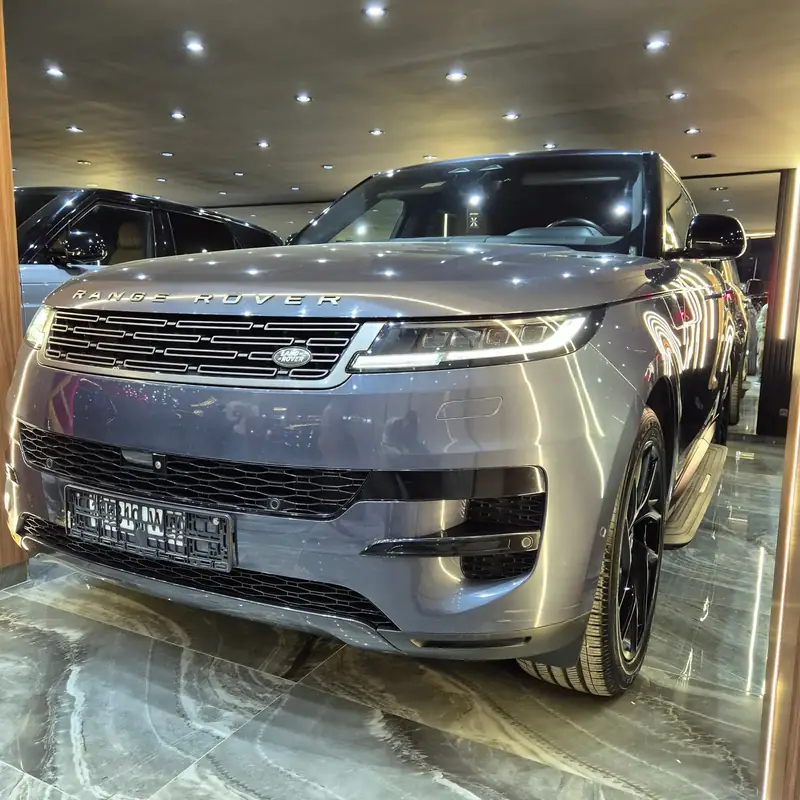

1 / 12


Land Rover
Range Rover Sport en Tánger
Disponible
El Range Rover Sport está en exposición en Aurea Premium Cars, en la Av. Moulay Rachid de Tánger. Motor: Diésel turbo 3,0 L de 6 cilindros en línea, microhíbrido. Caja de cambios: Automático de 8 velocidades. Interior: Cuero camel y negro. Equipamiento: Sonido Meridian, llantas negras de 22 pulgadas, estribos laterales. Kilometraje: 74.485 km. Pide el precio por WhatsApp y reserva una visita para verlo en persona.
—Potencia (CV)
—0 a 100 km/h
—Velocidad máx., km/h
Resumen
- Año
- A consultar
- Kilometraje
- 74.485 km
- Color
- Gris azulado metalizado
- Carrocería
- SUV
- Interior
- Cuero camel y negro
- Equipamiento
- Sonido Meridian, llantas negras de 22 pulgadas, estribos laterales
- Importado de
- A consultar
Motor y transmisión
- Motor
- Diésel turbo 3,0 L de 6 cilindros en línea, microhíbrido
- Par
- A consultar
- Caja de cambios
- Automático de 8 velocidades
- Tracción
- Tracción total
- Combustible
- Diésel